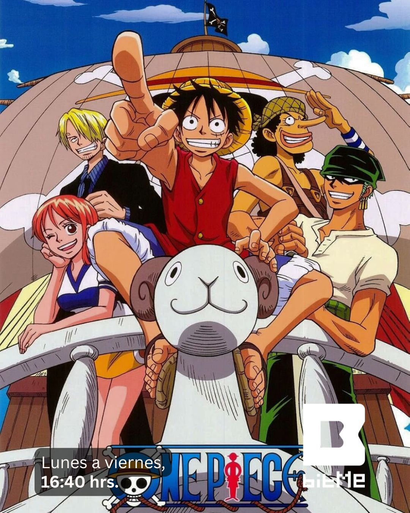
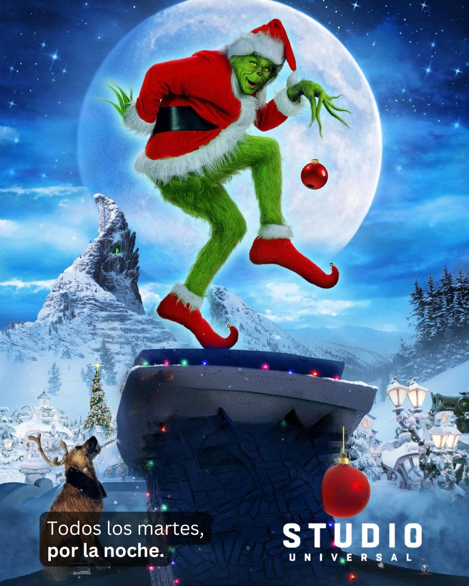

¡Empieza a disfrutar ya!
Entretenimiento, diversión y conocimientos para toda la familia.
Ver canalesMás canales
Te brindamos más canales con la mejor programación nacional e internacional.
Menor precio
Ponemos a tu alcance mayor variedad en entretenimiento y contenidos al mejor precio dentro de nuestra zona de cobertura.
Próximamente...
¿Te gustaría tener internet accesible y de alta velocidad?
Más destacados del mes:

One Piece
Únete a las emocionantes aventuras de Luffy y su tripulación de piratas en la búsqueda del legendario tesoro One Piece.
Ver másJugando Claro
El Tri enfrenta a Uruguay en Torreón. Disfruta la previa con alineaciones, reportes y todo sobre el duelo por TV Apaxtla.
Ver másComedias de acción
Un especial de acción adrenalínica con un tono divertido, personajes excéntricos y situaciones absurdas.
Ver más
Combo especial de martes
Como parte de nuestro especial de Navidad, traemos para ti, dos películas de tus actores y franquicias favoritas.
Ver más